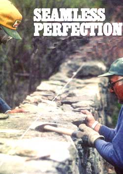
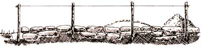
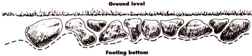
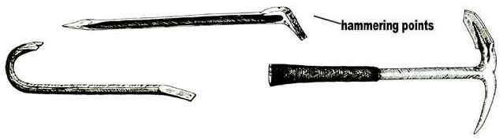
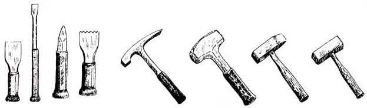
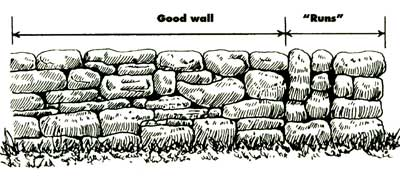
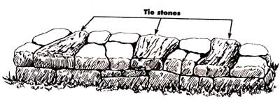
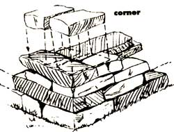
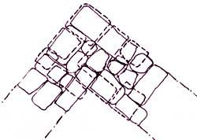
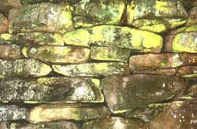

IF YOU STOP AND THINK ABOUT IT, it seems that, written word aside, the most enduring monuments to man's creativity and hard work are built of stone. The Pyramids, in Egypt, the Great Walls of China and Peru, temples most everywhere from Latin America to India, the castles of Europe, and the mile upon mile of stone walls running through our own New England countryside were all laid by hand and without a speck of mortar.
They endure in part because rock is as near a definition of "forever" as exists. But more important is their main construction ingredient-gravity. In a properly built stone wall each rock sits square on the ones below it, and so long as gravity keeps pulling, that wall is going to stay put.
So, here's how to go out and build a really permanent monument to yourself. Do it right-square, plumb, and well-tied throughout-and the wall will be standing long after you and I and all our other accomplishments and failings are forgotten.
First, get a pair of well-fitting steel-toed boots with ankle-, or better yet, calf-length uppers made from stiff, thick leather. Next, buy a pair of horsehide work gloves or a pair molded of rubber with grit imbedded into the palm and fingers. These gloves work well when gripping stones, and the boots will keep your toes from getting dented when you drop a boulder on your footwhich is bound to happen at one time or another. Finally, be sure you have the needed time and ambition.
There is no such thing as a half-built stone wall. It's either a wall or a stone pile. And to get from one to the other takes a lot of lifting-a cubic foot of rock weighs the better part of a hundred pounds.
So a little decorative wall only three feet high, two feet wide, and 20 feet long weighs some five tons or more (depending on the amount of air space built in) and comprises a thousand or more average-size stones. If you have to fetch stones from somewhere, there is the loading and unloading in addition to the building to consider. That little 20-foot wall can have a man lifting well over 20 tons of dead weight before it is finished.
(If you're old enough to remember listening to Fibber McGee and Molly or Your Hit Parade-before television-I strongly suggest you get your physician's okay before taking on a stone wall, especially if you're a desk worker and unused to strenuous labor.)
In any event, plan to take your time and use carts, ramps, barrows, and levers to move larger stones. There's little point in hurrying to complete a wall that will likely endure into the next millennium. And no point at all in busting a gusset doing it. There's a right and a wrong way to lift. Just keep your back straight and the stones close to your body. Lift with your legs and arms, not with your back-at least not if yours is as easily sprung as mine.
Picking Your Stone
The next step is finding stone. Most everything I've read about building with stone assumes you have a sufficient supply of "good," easy-to-build-with stones with three or four flat sides. And they suggest that if you don't have enough good stone lying around your property, you can buy or quarry it or dress your rounded stones flat.
Quarrying by hand and dressing stone is devilishly hard work, and paying to have rock trucked any distance is expensive. Certainly, good stones are easier to build with and make a classier- looking wall. But if some or all of the stones you have are in the "not-so-good" category, go ahead and plan to use them anyway. We'll discuss using both kinds for wall construction.
Probably the best wall stones come from hard shales and schists-rock types that developed flat cleavage planes during metamorphism that split out into layers with flat tops and bottoms. Many will break naturally into stones with flat sides as well. Others may not come with good flat faces, but can be dressed quite easily. I've worked with some metamorphic stone that split almost as easily as a block of wood.
Hardest to build with are igneous stones found in fields or running water. Glacial action or gradual erosion in a stream will round even these very dense and hard rocks. Though nearly all rock has a "grain," or a tendency to spilt along a fairly flat place, finding the grain in granite and the like is difficult, and splitting faces off small rocks takes more time and effort than it is worth.
Sedimentary rock formations, having been laid down in sheets, tend to occur in layersproperly called strata. Most are relatively soft, and easily split or cut by nature or a quarrier into good building stone. But they also wear faster than other kinds of rock. Windborne particles will wear down sandstone in time, and limestone gradually gets eaten away by the natural acids in rainwater. A sandstone or limestone wall might not hold up for more than 10 or 12 thousand years!
Besides its good breaking tendencies, metamorphic rock is usually durable-even though it is often soft and easily worked. Marble is the traditional medium of sculptors, and much ancient Greek and Egyptian marble sculpture has withstood wind and rain for thousands of years. Another metamorphic rock, slate, was used for gravestones by the earliest settlers in America. Go to an old Colonial graveyard; you'll note that it is the slate stones whose inscriptions are still sharp and clear. Markers made from igneous rock have nearly worn flat.
Sources of Stone
Lacking a supply of stones on your own place and not wanting to buy them, you can look several places. Perhaps another landowner will let you haul off rocks from his walls or abandoned stone buildings. Rock ramps, cellars, and foundations left after an old house or barn has burned down provide one of the best "good" stone sources you can find. Often these old cellar holes are dangerous or an eyesore, and owners are glad to have part of the demolition or fill-in job done for free.
Construction sites often provide excellent flat-sided rock picking, especially where new highways are dynamited through hilly country. Some streams, rivers, lakes, and seashores are good sources for frost-split or water-rounded stones. And you'll find that stones only weigh half as much moved under water.
If there are a good many old stone buildings or foundations in your area, you may find abandoned quarries or gravel pits scattered throughout the countryside that were dug by the original stone builders. Ask around, or consult a U.S. Geological Survey topographical map. Abandoned and active quarries and gravel pits are shown on these detailed maps.
Equipment
I've found one of the handiest pieces of wallbuilding equipment-better than a wheelbarrow-to be one of those highwheeled, box-shaped garden carts. You can tie one up on its square end and just roll the stones in. (Don't overload it, as I once did, and have a wheel collapse on you.) Used sensibly, the carts save much lifting, and you can run larger stones up planks to the wall top with one.
Other tools include a yardstick, a hank of stout cord, several stakes a foot or so longer than the wall height, a line level to go on the cord, a mason's level, and perhaps a long and true board to tie to, plus a good digging spade.
To move larger rocks around, you'll need a long (five feet or more) steel crowbar and a smaller crowbar, or pinch bar, that has one curved end. Another device is the hoe/pic. This tool is 26" long, weighs about 4 pounds, and is somewhat expensive (about $17). However, it has many uses-pick, wedge, pry bar, and hoe. Its versatility goes beyond stone-wall building and has a decided advantage over conventional pry bars when you're digging large boulders that are embedded in the ground. You'll also need a collection of thick planks and short lengths of 1 1/2" or 2" iron pipe to serve as rollers if you are working with really big stones.
If you plan to do any trimming or dress ing of stones, get a pair of safety goggles. Rock can splinter into razor-sharp fragments, and even a dull chunk in an eye can mean trouble. Be sure the goggles are well ventilated so they won't fog up on you during a hot day's work.
For trimming and dressing you should have a set of mason's or geologist's hammers and chisels. These come in a variety of widths and shapes, and are used mainly for scoring and splitting both brick and stone. A relatively new tool available to stone builders is the rockhound's gad-pry bar (about $7). Used with a heavy crack hammer, this 18" tool easily open seams and crevices in stone. It has two hammering faces that pen-nit you to drive the bar down into a seam and then drive it to the side to force the crack or seam apart.
Hammers come in two types. The first has a head with a flat side and a wedgeshaped side-this is the traditional stonemason's hammer. The other, a Bush hammer, has a flat, toothed head for really getting a purchase on a piece of rock. You can also get a lightweight mason's hammer shaped like a geologist's pick. It is for more delicate work and has a small pounding face and a long, thin chipping blade on the other side.
Laying Out the Wall
To get the essentials down pat, let's build a section of a basic 3' X 2' wall to get the essentials down pat (it doesn't matter what kind of stone we use as the principles of wall building are pretty much the same). If the wall is to run along your property line, be sure that the whole thing is within your boundaries, unless your neighbor is eager to share in the cost, construction, and upkeep of a shared wall.
In the old days, New England farmers would patrol shared stone fences every spring, each replacing the smaller winter-dislodged stones on his own side, and joining forces on the big ones.
As the crochety Yankee farmer in Robert Frost's Mending Wall puts it, "Good fences make good neighbors." Don't know as I agree with the sentiment (Frost didn't). I'd say: Don't build a shared fence astride your property line unless you are already good neighbors and plan to remain so for the next several generations.
First, lay out an outline the full length and width of the wall with cord looped to short sticks. For a curved wall you may want to lay out a thick rope or garden hose to describe a fair curve.
If you can't avoid them, grub out any trees, stumps, or underbrush in the wall's area. Remember: That little maple sapling a few feet from the wall is going to grow. In time its roots will heave the rock, and the trunk may expand and push the wall aside. Cut it down.
A low wall can be built right on the ground. In a few years the lowest stones will sink into the sod a bit and no one will know the difference. It is better stonemasonary, though, and will make for a sturdier wall, if you dig out sod and topsoil so the footing-the lower courses or layers of rock-rests on the underlying subsoil or hardpan.
In most places where you find plenty of native rock, the topsoil layer will be shallow (a foot or less deep), and removing it will be a minor chore, likely turning up an additional supply of rocks in the bargain. In some valley and lowland areas with deep, loamy topsoil a stone wall set just on the surface would gradually sink out of sight. But then, I don't think an honest stone wall would be comfortable in the flatlands.
Footing trench or no, the next step is to lay out your batter boards-stout stakes hammered in to mark the four end comers of the wall. Put the stakes in good and deep and use your mason's level to make them plumb-straight up in all dimensions. Make sure the tops of the stakes are several inches higher than the planned wall.
Next, tie your cord to the four stakes at wall-top height and stretch the cord as tight as you can. Every six to 10 feet, on both sides of the wall, hammer in more stakes. Make sure they are outside the wall area so string touches the inner-facing sides of each stake. You may tie or staple line to the stakes if building up or down grade or if the wind is bellying the upwind line on you. (A good many wall builders, this writer included, have neglected to use the auxiliary stakes only to find that their supposedly straight wall ended up with a slight curve due to a prevailing wind blowing the guidelines.)
Now, attach the line level to the cord and adjust until all four sides and both ends are level. This will define the approximate plane of the top of your wall. For the most pleasing appearance, sturdiest construction, and most satisfaction from the work, the wall top should be flat and level from side to side, either following the lay of the land in the long dimension or remaining horizontal, following the grade in carefully graduated steps.
On a grade or flat, courses should be about the same thickness, each course running horizontally-parallel to the level. Sides of the wall should be vertical, or in higher walls they should have a slight inward slope (a slight batter) on each side. Ends and comers should be square and vertical.
This isn't feasible 100% of the time with stone, but try to keep all dimensions as plumb and square as you can. You'll probably be looking at that wall for the rest of your life. Come fire, bail, or high water, it may be the one thing standing for your great-grandkids to remember you by.
Remember that gravity pulls straight down: Unless the wall rests on a flat, horizontal, and level plane (or sections rest on a succession of flat steps on hilly ground), gravity will slowly pull your wall downhill. So either level out the ground or dig footings with bottoms having a plane parallel to the guideline.
Try to keep all dimensions as plumb and square as you can - you'll probably be looking at that wall for the rest of your life.
A lot of people will tell you to put your biggest, flattest-shaped stones at the bottom of the footing-then later on tell you to save them for the topping course. Having worked mainly with odd-shaped stones the glaciers left in our cornfields, I pick the absolute worst stones for the bottom, the ones with not a single flat surface or with oddshaped protuberances. I find the least unreasonable side, then bury the stone in whatever shape hole is needed to get the best side exposed at the depth I want the bottom of the first course to run.
The objective in all this is to give the wall a good, level base to rest on. Even if you must dig a series of notches in a hillside, your wall will be the better for it. In all below-grade work, keep stones several inches apart, filling the open space with smaller rocks. This will permit water to drain through easily.
The footing course or courses should be laid to be a bit lower in the center-higher out at the edges. This slight "V" angle is often maintained throughout construction. Thus the outer walls of the structure lean in against themselves. Gravity helps keep the wall standing by pulling rocks down as well as "in" toward the wall's center.
Aboveground Building
With the footing laid to ground level, lower the guidelines to what will be the top of the first aboveground course. This should be the average height of the thickest, heaviest rocks you have. No point in lifting them any higher than necessary.
Do try to save the flattest rock with the most uniform thickness for the top. The bigger the better, though don't save any stones, no matter how flat they are, so large you can't handle them easily at the top.
Now begin layering the wall. Keep the best flat face of the narrow dimensions of each stone facing out when possible. Be sure each stone is bedded solidly on the stones below it. If a stone wobbles, it is better to chip off a wobble knob or dig out a hole or make a joint in the rock below than try to shim it up with smaller rocks and wedges. If you do use smaller rocks to get the wobble out of a big stone, be sure they are wedged in tight and held in place by other large rocks.
Keep the guidelines level, and continually sight along the side of the course, adjusting rock placement with level and yardstick to make sure all remain square.
To be sure the sides are as vertical as possible, or that they slope inward at the desired angle, hang a small pebble from a length of string. Put a bent wire on the other end and hang it from the guide line. Run the plumb bob along as you lay up wall. Keep moving the guidelines up as you finish each course.
With a small wall only a couple of feet wide and with reasonable luck in getting good stones, your courses will seldom be more than two stones wide, and many of the bigger stones will reach all the way across.
Don't use any small stones in the outer faces; they'll be the most likely to work loose in time. Put the little stuff in the interior to fill gaps between the larger stones.
Often you'll find a good-fitting stone that is too big; one end or corner sticks out. Take your wide chisel, score all around the chunk you want to remove-score 1/2" to 1/8" deep all the way around if you can. Then knock off the extra. You may have to get some heavyduty equipment such as a heavy sledge. If the steel strikes cause sparks, then you probably have an igneous rock and should find another place for it to fit.
With good, longish, relatively flat stones, you should never have a vertical fissure in the wall that extends up from course to course. In other words, each rock should rest on at least two others in the course below, and joints between stones should not extend from course to course. Too many such adjacent joints are called a "run" and greatly decrease your wall's stability.
You may not see it move, but any dry-laid (mortarless) wall is in continuous motion during settling, as soil is moved around underneath by flowing water and, in the North, by the freezing and thawing of the earth.
With too much run, these stresses will concentrate at the weakest point, where a joint extends through two or more courses. In effect, the wall will try to fold there, and in time will fall.
Another topic of dispute is chinking: Do you chink in or out? That is, when rock surfaces don't mate well or where there is a substantial gap in a face, do you fill these holes with shim rocks laid big-end inside the wall (chinked "out")? Or do you hammer in a wedge-shaped shim from the outside (chinked "in")? I do it both ways.
Gophers, squirrels, woodchucks, and all manner of other wildlife find a stone wall a natural-grown homesite. The wiggling of a litter of rabbits can dislodge a stone that is too small or poorly set. So can a dog dig ging for a chipmunk, or the steps of youngsters, or hunters walking the top of the wall.
From time to time-every six to eight feet if you can-place a long stone with its longest axis aiming into, rather than along, the wall. Alternate sides when "tying" the wall, as this is called. The tie stones keep the wall from merely being two unattached outer layers; the tie stones literally tie one face to the other.
Ends and Corners
Save the best rocks, those most nearly rectangular and of even thickness, for ends and comers. A wall end must stand on its own, and for appearance's sake the end stones should have at least one good square corner-or those at the outside edges should. The top stones should be the biggest you can handle. I like to keep the longest rocks for ends, so they can extend as far back into the wall as possible. It is also a good idea to have ends particularly welltied crosswise.
Comers are more complicated still. First, you want to tie your comer into both lengths of wall-which is to say that in each course it is well to have an extra-long rock extending from the comer into both the north/south and the east/west length of wall. If you lack enough long stones to tie into both walls during each course, alternate them-tying first into one, then the other.
From the footing course up, you must take another precaution. Remember that the comer must withstand the expansion and contraction coming from both lengths of wall. A bias toward the lay-up pattern of one length over the other would cause the corner to work loose in time.
So try not to let any edge of any rock line up with any joint in the course below. Or, don't let the edge of any rock line up with the edge of a rock below-except, of course, on the outer and inner faces.
In still other terms (this being a bit complicated to explain), put each stone so as to cover as many joints as possible, being sure each covers some north/south joints and some east/west joints.
So now we have a 2' X 3' wall with ends and a comer. How about a larger wall? It is more of the same with a few exceptions. First, going much over 3' in height, you should increase the base or overall width by some 8" for each added foot of height. For example, a 7'-high wall needs a 4' 8"-wide base. For a 10' height, the base should be 7' wide. Width can remain at the base dimension right to the top or can taper (to a point, if you like).
The higher the wall, the deeper should be your footings. For any wall much over waist high (a major undertaking that presupposes an ample supply of stones), you should go down to below frost level or a depth of 2', whichever is deeper. This is a lot of work lost to the eye forever, but it guarantees a good wall.
Editor's note: John Vivian's book Building Stone Walls expands on this subject and discusses how to quarry rock and build stairs, stiles, gates, and retaining walls. It costs $6.95 postpaid from Garden Way Publishing, c/o Storey Communications, Schoolhouse Rd., Pownal, VT 05261.
Most tools for stone building can be purchased at hardware stores and building supply houses. Some, however, are rather specialized geological tools available only at certain suppliers. To obtain such items as a geologist's hammer, hoe/pic, and gadpry bar, write for a catalog from the following suppliers:
Forestry Suppliers Inc.
205 W. Rankin St.
Jackson, MS 39204
The Ben Meadows Company
3589 Broad St.
Chamblee, GA 30366
|
 Photograph ? Clyde H. Smith/F/Stop; Illustrations ? Douglas Merrilees and Ralph Scott A plumb line gets you started with even courses when building on uneven ground. |
 Photograph ? Michael P. Gadomski/ Photo Researchers, Inc. Tie stones are especially important at corners. They are shown here shaded |
 Over lapping in the courses |
|
 Come fire, hail, or high water, a properly built stone wall will be there for your great-grandkids to remember you |
 |
 |
|
 |
 |
 |
|
 |
|
|